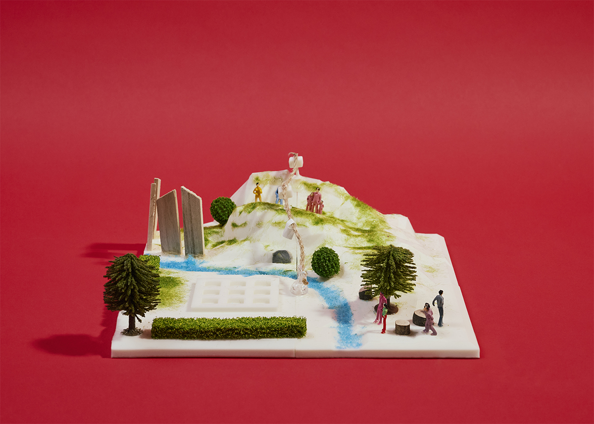
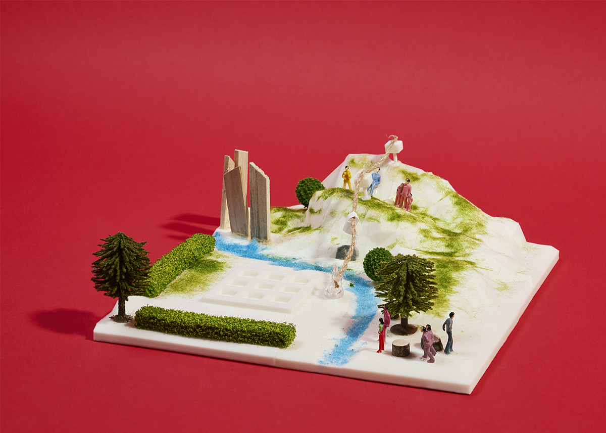

제1구역: 푸른산 은폐 전략
지구인 분석 결과
주요 기술을 기반으로 분석한 인간의 약점
1. VR 시뮬레이션: 낯선 환경에서 인간의 스트레스, 고립감을 관리
2. 슈트: 방사선, 온도 조절 등이 가능해, 슈트 소지 유무가 중요할 것으로 예상
3. 스마트폰과 같이 타인과 커뮤니케이션 가능한 도구 : 외로움이 인간의 약점
4. 데이터에 대한 의존성
5. 화성은 지구와 환경 자체가 전혀 다르므로, 인간이 기존 기술에 의존하는 것이 오히려 약점이 됨 (ex. 전기를 어디서 끌고 올 것인가)
6. 지구인들의 기본적인 의식주 해결 필요
화성인으로서의 입장
우리 조는 1구역의 지형 조건이 매우 유리하다고 판단했다. 푸른 산은 주변을 내려다볼 수 있는 고지대이고, 은빛 모래 운하는 상류에 위치해 있어 수자원 보호의 가치가 크며, 그 주변에는 화성인 마을까지 자리하고 있다. 따라서, 1구역이 지구인에게 선점당하지 않도록 미리 보호하고 통제해야 한다고 보았다. 또한, 좋은 지형을 화성인 중심으로 적극 활용하고자 한다.
전략명: 푸른산 은폐 전략
푸른 산은 주변을 내려다볼 수 있는 고지대이기 때문에 감시 및 경계, 통제의 중심지로 활용될 수 있다. 이를 위해 지구인이 푸른 산과 화성인 마을, 은빛 모래 운하 상류에 함부로 접근하지 못하도록 막는 것을 전략의 목표로 세웠다.
1. 푸른 산에 지구인이 접근하지 못하게 하기 위해 울타리 설치 및 관련 법 제정
2. 지구인의 통신 장비와 관측 장비 설치 제한
3. 화성인만 아는 산속 통로 및 케이블카 만들기 -> 은밀한 이동 및 통신 제한
4. 은빛 모래 운하 상류의 오염 방지
곡 제목: 푸른산을 지켜라
우리의 화성을 지키자! 푸른산 지켜! 운하 상류 지켜!
울타리를 세우고 조용히 길을 막아라
함부로 넘지 못하게 화성의 법을 세워라
통신이 끊긴 산속 길 우리만 아는 비밀 통로
케이블카를 타고 가 마을을 이어 지켜내
우리의 화성을 지키자! 푸른산 지켜! 운하 상류 지켜!
우린 싸우려는 게 아니야 빼앗기지 않으려는 거야
함께 살 수는 있어도 우리 땅을 넘길 순 없어
우리의 화성을 지키자! 푸른산 지켜! 운하 상류 지켜!